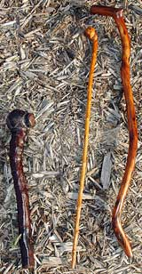

You don't have to be Irish to make a sturdy walking stick or cane, known in Ireland as a shillelagh (pronounced shih-LAY-lee). In fact, the gnarled, hardwood wallopers (which the Celts carried as weapons or rabbit killers) are really pretty easy to craft.
The traditional walking stick's name comes from an old Gaelic word meaning 'oak club,' and before the eighth century these weapons were made of oak cut from a great forest near the village of Shillelagh in County Wicklow, Ireland, according to an article in the Mother Earth News archive.
Dick Burke, the author of the article, reports that when the British invaded the Emerald Isle, they not only chopped down the great oak forests (which had been considered sacred by the Druids) and shipped off the timber to England, but also imposed strict laws, one of which was a ban on weapons.
After that, shillelaghs, far from disappearing along with the oak, simply began to be made from the wood of the Irish hazel or Irish blackthorn (a species of hawthorn), and craftily crafted in the shape of a cane or walking stick rather than a club.
Oak, Osage orange (known locally as hedge) and many varieties of the hawthorn tree make good hardwood candidates for your shillelagh. All species of American hawthorn have nasty thorns, so be prepared with heavy gloves and long sleeves when you are searching for just the right stick. Here is a summary of Burke's instructions, or you can read the entire article here.
Step one: You are looking for a branch that is gnarled, yet straight, something which when shorn of its bark and limbs will be knobby, hefty and pleasing to the eye. Its top, when trimmed, should fit comfortably in the palm of your hand (or you can choose a limb with a T-shaped handle made from a portion of an adjoining branch). Since a shillelagh should measure about 36 inches when finished, make certain that the rough stick you've set your sights on is somewhat longer. To tailor the stick to your height, measure from the floor to the crease in your wrist. Depending on whether you are making a lightweight cane or a hefty walking stick, choose a branch that is three-quarters of an inch to an inch and a half in diameter.
Step two: Once you have found and cut your stick, hold the tapered stick down firmly on hard ground or a rock and, using clippers or a hacksaw, trim off all the small branches to give the club that traditional knobby look and feel. Then wedge your cudgel between two close-growing saplings, hold it tightly, and cut it to the desired length. Finally, whittle away the bark (use particular care not to slice off the stumps left by your earlier sawing).
Step three: Use a small, sharp knife to round off the edges of the club's head and the nubs along its length. After finishing this chore, put your creation away to dry for a week or two. Medium and fine grained sandpaper, used in that order, will put a smooth surface on the dry, rugged-looking stick. When the stick is sanded to your satisfaction, wipe away the dust and stain it in your choice of wood tones. For a perfect product, apply a coat of tung oil after the stain has dried.
|
 MATTHEW T. STALLBAUMER You can craft walking sticks like those on the right from hard woods such as oak, hawthorn or Osage orange. The club-like shillelagh on the left is reminiscent of those made in Ireland prior to 800 CE. |
|
|